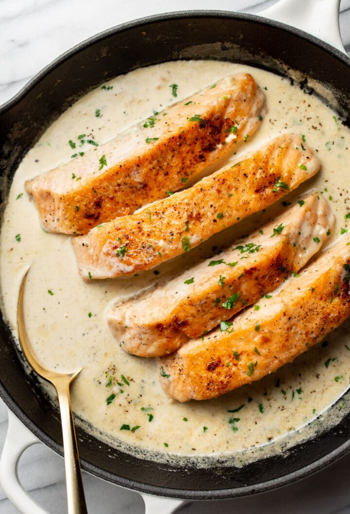

Home
Creamy Garlic Salmon

This creamy garlic salmon recipe is a 30-minute meal with pan seared salmon in a garlic cream sauce! It's incredibly simple to make for a special occasion... or anytime you want to treat yourself.
Servings
4
Prep Time
10 Minutes
Cook Time
20 Minutes
Total Time
30 Minutes
Ingredients
- 1 pound fresh salmon cut into 4 pieces
- 1/4 teaspoon garlic powder
- Salt & pepper to taste
- Flour for dredging
- 1 tablespoon olive oil
- 1 tablespoon butter
- 4-5 cloves garlic minced
- 1/2 cup chicken broth or dry white wine
- 1/2 teaspoon lemon juice
- 1/2 teaspoon Dijon mustard
- 1 cup heavy/whipping cream
- 1-2 tablespoons fresh parsley chopped
Instructions
- Cut the salmon into 4 pieces. Sprinkle each piece with the garlic powder and season with salt & pepper. Coat each piece in flour on all sides.
- Add the oil and butter to a skillet over medium-high heat. Once the pan is hot, add the salmon. Cook it for 3-4 minutes/side or until it's nicely browned (don't overcook - the salmon will finish cooking in the sauce). If using skin-on salmon, start with skin side down. If the salmon is a lot thicker than 1", sear it for slightly longer. Transfer the salmon to a plate.
- Add the garlic, chicken broth, lemon juice, and Dijon mustard to the skillet. Stir/whisk until the mustard has dissolved, and let it bubble for 1-2 minutes.
- Add the cream to the skillet.
- Place the salmon back into the pan and let it cook for another 5 minutes or so until the sauce has thickened a bit and the fish has cooked through. Season with extra salt & pepper if needed and sprinkle with the chopped parsley.